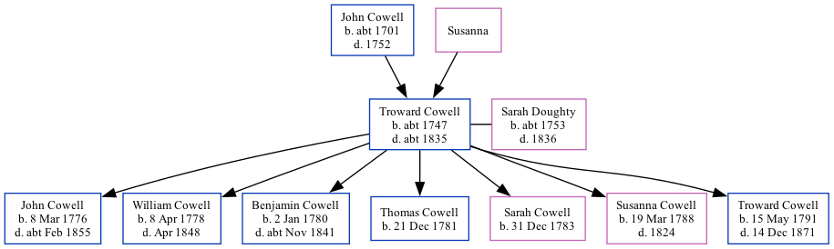

Troward Cowell c1747 - c1835
[ Home ] | [ Calendar ] | [ Surnames Index ] | [ Family History ]The child of John Cowell and Susanna, Troward Cowell, the 4 times great-grandfather of Nigel Horne, was born in St Lawrence, Thanet, Kent, England c. 17471, was baptized there on Jan 30, 1747 and married Sarah Doughty (with whom he had 7 children: John, William Castle, Benjamin, Thomas, Sarah Elizabeth, Susanna and Troward) at St John The Baptist Church, Margate, Kent, England on May 30, 17753 (KFHS CD 28). In 1790, he lived at his birthplace5.
He died c. 1835 in Margate1,2 and was buried there at St John The Baptist Church on Mar 2, 1835 (KFHS CD 28. Aged 87 years)4.
Parents
- John was born c. 1701
Children
- John was born on Mar 8, 1776
- William Castle was born on Apr 8, 1778
- Benjamin was born on Jan 2, 1780
- Thomas was born on Dec 21, 1781
- Sarah Elizabeth was born on Dec 31, 1783
- Susanna was born on Mar 19, 1788
- Troward was born on May 15, 1791
Citations
- England, Select Deaths and Burials, 1538-1991 Ancestry.com Operations, Inc.
- Public Member Trees Online publication - Provo, UT, USA: The Generations Network, Inc., 2006.Original data - Family trees submitted by Ancestry members.Original data: Family trees submitted by Ancestry members.
- England Marriages 1538-1973 - Findmypast
- Kent, Canterbury Archdeaconry burials 1538-1988 - Findmypast
- UK, Poll Books and Electoral Registers, 1538-1893 Online publication - Provo, UT, USA: Ancestry.com Operations, Inc., 2012.Original data - London, England, UK and London Poll Books. London, England: London Metropolitan Archives and Guildhall Library.Original data: London, England, UK and London Poll Books
Notes
worldconnect.rootsweb.ancestry.com.
Media
England Deaths and Burials 1538-1991 Transcription - R_276590744
Canterbury Marriages - GBPRS/CANT/M/97111462/1
Canterbury Marriages - GBPRS/CANT/M/97118606/1
Canterbury Marriage Banns - GBPRS/CANT/M/94022888/1
Canterbury Burials - GBPRS/CANT/D/95197371
England Marriages 1538-1973 - R_848615334
England Marriages 1538-1973 - R_848615599
Kent Baptisms - GBPRS/CANT/B/96391393
England Births & Baptisms 1538-1975 - R_885329432
Family Tree
Generated by Ged2Site. Last updated on Jul 20, 2025